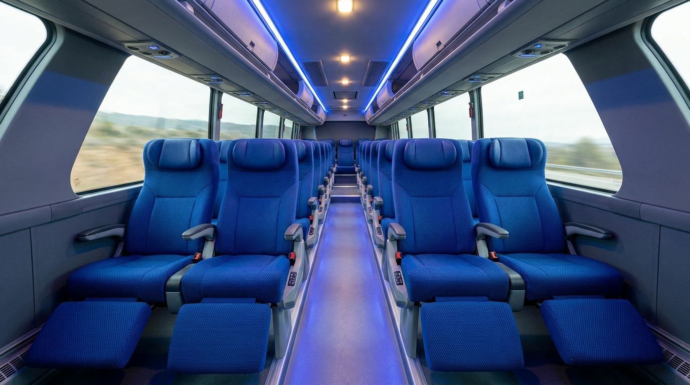
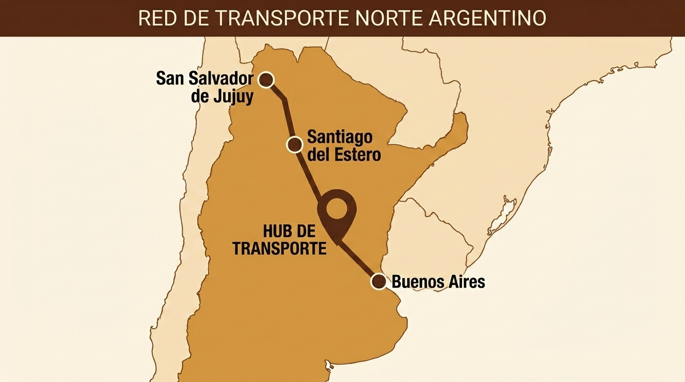

hub
Terminal Central (Buenos Aires)
Punto de partida con asistencia personalizada y salas de espera climatizadas.

Servicio premium de larga distancia que une Buenos Aires con el norte del país, priorizando la accesibilidad y el confort de cada pasajero.
Punto de partida con asistencia personalizada y salas de espera climatizadas.
Ubicada en un punto medio estratégico, con conexión directa al transporte local.
Destino final en cualquiera de las provincias seleccionables del norte del país, con instalaciones adaptadas para turistas.
Nuestra red estratégica conecta los principales destinos del norte argentino. Visualizá las rutas directas que facilitan tu viaje entre Buenos Aires y puntos clave como Santiago del Estero y San Salvador de Jujuy.

Frecuencia garantizada cada 120 minutos.
| Salida | Destino | Estado | Plataforma | Acción |
|---|---|---|---|---|
| 06:00 | San Salvador de Jujuy | check_circle A tiempo | 04 | Reservar |
| 08:00 | Santiago del Estero | check_circle A tiempo | 02 | Reservar |
| 10:30 | Salta | check_circle A tiempo | 07 | Reservar |
| 12:00 | Formosa | check_circle A tiempo | 04 | Reservar |
| 14:00 | Resistencia (Chaco) | warning Demorado (10 m) | 01 | Reservar |
| 16:30 | Salta | check_circle A tiempo | 03 | Reservar |
| 18:00 | San Salvador de Jujuy | check_circle A tiempo | 04 | Reservar |
Rampas automáticas en todas las unidades.
Espacios reservados y anclajes para sillas de ruedas.
Señalización en braille y alto relieve.
Avisos sonoros y visuales de próximas paradas.
Personal capacitado para asistencia en el embarque.
Protocolos de viaje inclusivo garantizados.